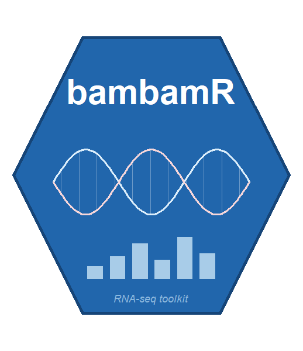
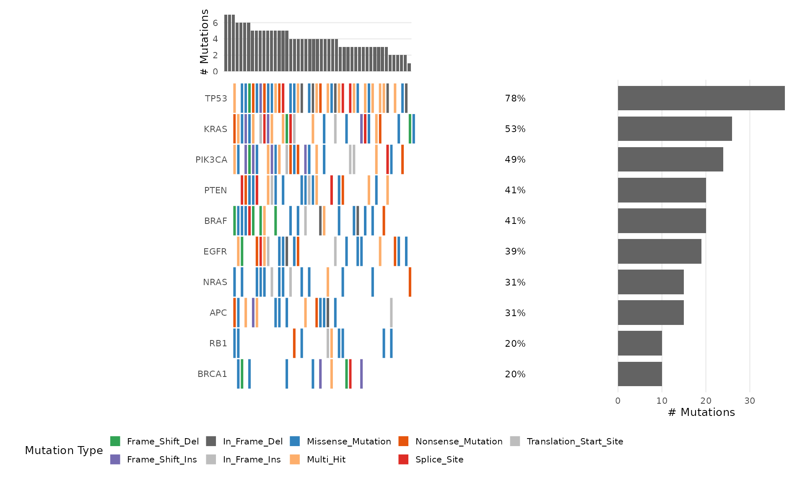
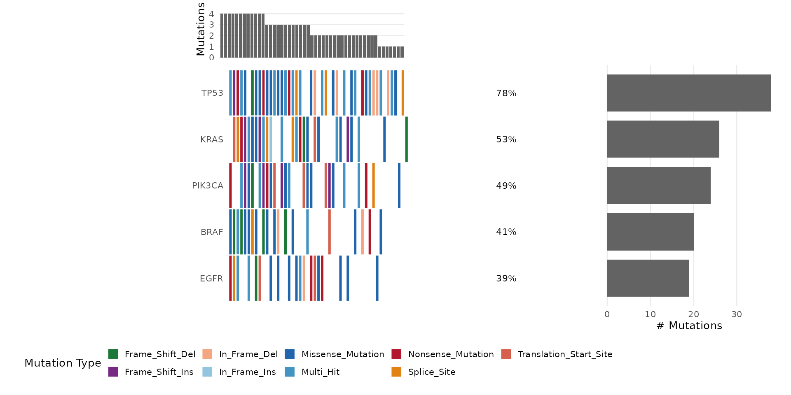
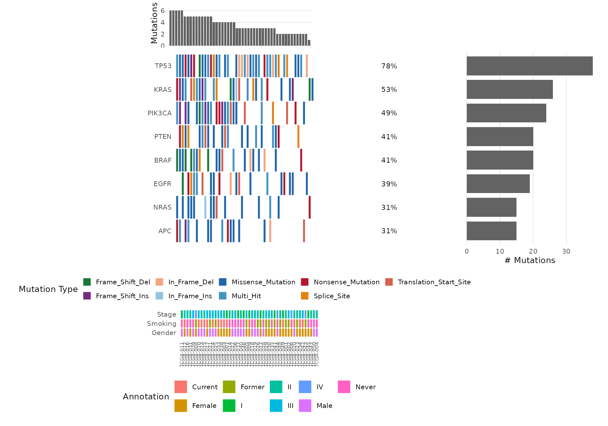
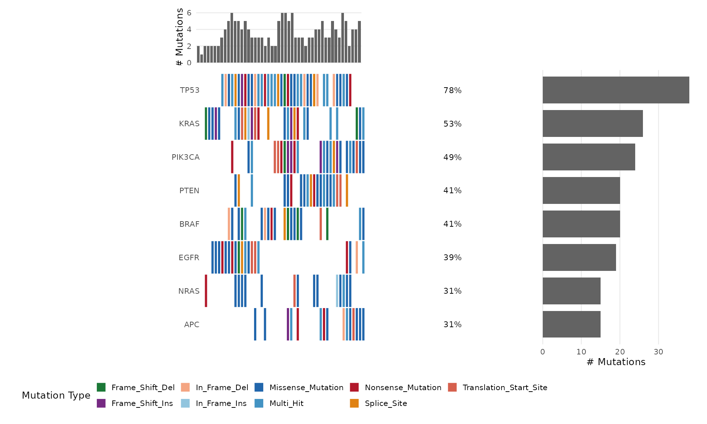
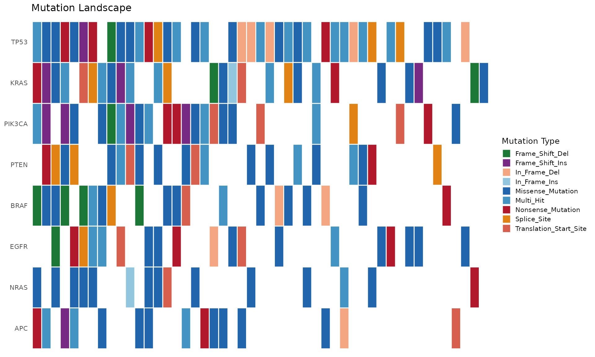

Overview
The bb_oncoplot() function creates publication-ready
onco plots (waterfall plots) showing the mutation landscape across
samples. It is built entirely with ggplot2 and returns a modifiable
ggplot object.
Input Data Format
bb_oncoplot() accepts two input formats:
Simple format
A data.frame with columns sample, gene, and
mutation_type:
# Load bundled example mutation data
ex <- bb_example_mutations()
mut_data <- ex$mutations
clinical_data <- ex$clinical
head(mut_data)
#> sample gene mutation_type
#> 1 TCGA-021 NRAS In_Frame_Ins
#> 2 TCGA-037 PIK3CA Missense_Mutation
#> 3 TCGA-037 BRAF Splice_Site
#> 4 TCGA-031 PIK3CA Frame_Shift_Ins
#> 5 TCGA-042 RB1 Missense_Mutation
#> 6 TCGA-008 NRAS Missense_MutationCustomizing Colors
Pass a named character vector to mutation_colors:
my_colors <- c(
"Missense_Mutation" = "#3182BD",
"Nonsense_Mutation" = "#E6550D",
"Frame_Shift_Del" = "#31A354",
"Frame_Shift_Ins" = "#756BB1",
"Splice_Site" = "#DE2D26",
"In_Frame_Del" = "#636363",
"Multi_Hit" = "#FDAE6B",
"Other" = "#BDBDBD"
)
bb_oncoplot(mut_data, n_genes = 10, mutation_colors = my_colors)
Selecting Specific Genes
bb_oncoplot(mut_data, genes = c("TP53", "KRAS", "PIK3CA", "BRAF", "EGFR"))
Adding Clinical Annotations
Provide a data.frame with sample annotations:
# Use the bundled clinical annotations
bb_oncoplot(mut_data, n_genes = 8, annotation_df = clinical_data)
Sorting Options
Sort samples by mutation frequency (default) or by co-occurrence clustering:
bb_oncoplot(mut_data, n_genes = 8, sort_by = "cluster")
Customizing with ggplot2
Since bb_oncoplot() returns a ggplot object, you can
further customize:
p <- bb_oncoplot(mut_data, n_genes = 8, show_barplot = FALSE,
title = "Mutation Landscape")
p + theme(legend.position = "right")
Exporting Publication-Quality Figures
p <- bb_oncoplot(mut_data, n_genes = 15, title = "Cohort Mutation Landscape")
ggsave("oncoplot.pdf", p, width = 12, height = 8, dpi = 300)
ggsave("oncoplot.png", p, width = 12, height = 8, dpi = 300)